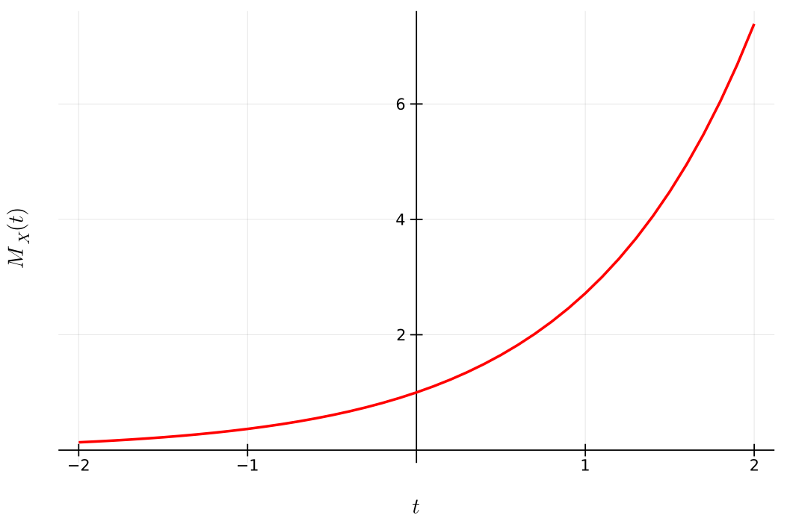
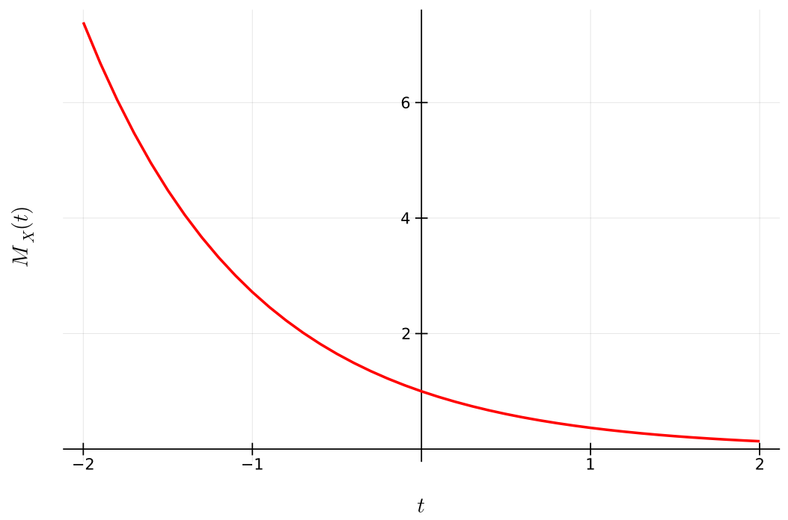
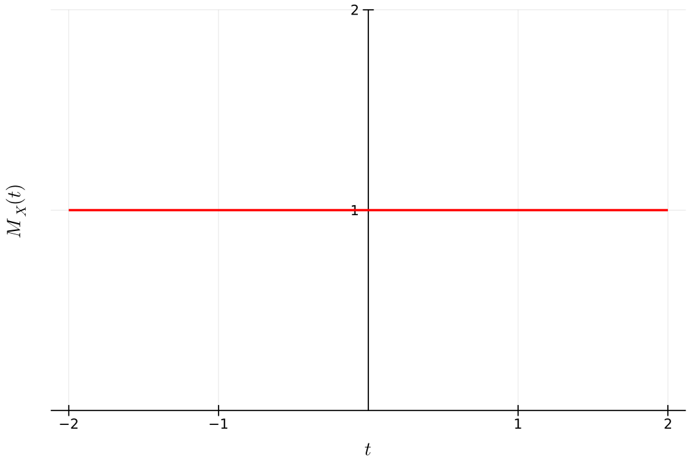
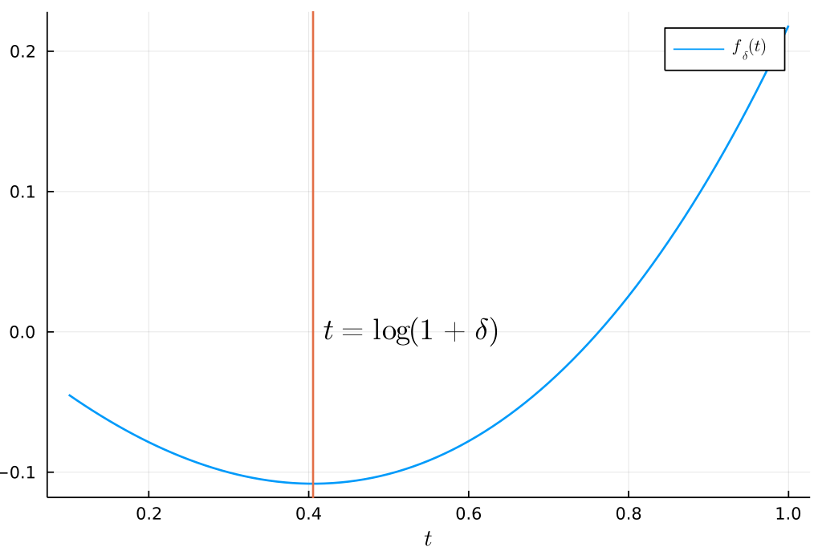

Chernoff bounds
Indice
Funzione generatrice di momenti
Si dice funzione generatrice dei momenti ( fgm ) di una variabile aleatoria \(X\) la seguente funzione: \[ M_X : \mathbb{R} \to (0, \infty) \cup \lbrace \infty \rbrace\\ M_X(t) := \mathbb{E} \left[ e^{tX} \right] \] Osserviamo che:
se \(P(X \geq 0) = 1\) (ovvero se \(X\) assume sempre valori non negativi) allora \(M_X\) è crescente e quindi per ogni \(t \leq 0\) si ha che \(M_X(t) \leq M_X(0) = 1 < \infty\).

Figura 1: Caso \(X \geq 0\).
viceversa se \(P(X \leq 0) = 1\) (ovvero se \(X\) assume sempre valori non positivi) allora \(M_X\) è decrescente e quindi per ogni \(t \geq 0\) si ha che \(M_X(t) \leq M_X(0) = 1 < \infty\).

Figura 2: Caso \(X \leq 0\).
banalmente se \(X = 0\) avremo che \(M_X(t) = 1\) per ogni valore di \(t \in \mathbb{R}\).

Figura 3: Caso \(X = 0\).
se \(X\) è limitata all'intervallo \(\left[ a,b \right]\), ovvero \(P(a \leq X \leq b) = 1\), allora certamente \(M_X(t) < \infty\) per ogni \(t \in \mathbb{R}\). Più formalmente \[ X \in \left[ a,b \right] \implies \forall t \in \mathbb{R} M_X(t) < \infty \] Non è sempre vera invece l'implicazione inversa, ovvero \[ \forall t \in \mathbb{R} M_X(t) < \infty \;\not\!\!\!\implies X \in \left[ a,b \right] \] Per esempio, consideriamo \(X \sim \text{Poisson}(\lambda)\) con \(\lambda > 0\), si ha che
\begin{align*} M_X(t) &= \sum_{n \geq 0}e^{tn}P(X = n)\\ &= \sum_{n \geq 0}e^{tn}\frac{\lambda^n}{n!}e^{-\lambda}\\ &= e^{-\lambda} \cdot \sum_{n \geq 0}\frac{(e^{t}\lambda)^n}{n!}\\ &= e^{-\lambda}e^{\lambda e^t}\\ &= e^{\lambda(e^t - 1)} < \infty \;\;\forall t \in \mathbb{R} \end{align*}
Teorema 4.1 - legame tra fgm e momenti
Consideriamo un intorno finito dell'origine \((-\delta, \delta)\) (con \(\delta > 0\)) e supponiamo che \(M_X\) sia finita in quell'intorno, ovvero che \[ M_X(t) < \infty \;\; \forall t \in (-\delta, \delta) \] In tal caso allora si può derivare rispetto a \(t\) in tale intervallo, ottenendo quindi \[ M_X^{(n)}(0) = \mathbb{E} \left[ X^n \right] \;\; \forall n > 0 \]
Proof: assumiamo che sia legittimo invertire l'operazione di derivazione con quella di valore atteso, ovvero che \[ \frac{d}{dX}\mathbb{E}\left[ f(X) \right] = \mathbb{E}\left[ f'(X) \right] \] A questo punto, derivando \(n > 0\) volte in \(t\) avremo che \[ M^{(n)}_X(t) = \mathbb{E} \left[ X^n e^{tX} \right] \] In fine valutando tale derivata nel punto \(t = 0\) avremo che \(M_X^{(n)}(0) = \mathbb{E} \left[ X^n \right]\) \(\square\).
FGM di una geometrica
Calcoliamo la f.g.m. di \(X \sim \text{Geom}(p)\).
\begin{align*} M_X(t) &= \sum_{n \geq 1} e^{tn}P(X = n)\\ &= \sum_{n \geq 1} e^{tn}(1-p)^{n-1}p\\ &= \frac{p}{1-p}\sum_{n \geq 1} (e^t(1-p))^n\\ &= \begin{cases} \frac{p}{1-p}\frac{e^t(1-p)}{1 - e^t(1-p)} &\mbox{se } e^t(1-p) < 1\\ \infty &\mbox{se } e^t(1-p) \geq 1 \end{cases}\\ &= \begin{cases} \frac{pe^t}{1 - e^t(1-p)} &\mbox{se } t < -\log{(1-p)}\\ \infty &\mbox{se } t \geq -\log{(1-p)} \end{cases} \end{align*}
perciò \(M_X(t) < \infty\) non è soddisfatta per alcuni valori di \(t\) (ovvero quando \(t \geq -\log{(1-p)}\)).
Un altro caso limite è quando \(p=1\). In questo caso ricadiamo nel primo caso \[ t < -\log{0} = - (-\infty) = \infty \implies M_X(t) = e^t \;\; \forall t \in \mathbb{R} \]
Teorema 4.2
Siano \(X,Y\) due variabili aleatorie con f.g.m. coincidente in un dato intorno dell'origine, cioè esiste un \(\delta > 0\) tale che \(M_X(t) = M_Y(t)\) per ogni \(t \in (-\delta, \delta)\). Allora \(X\) ed \(Y\) hanno la stessa distribuzione.
Teorema 4.3
Siano \(X_1, ..., X_n\) variabili aleatorie indipendenti. Allora vale che \[ M_{X_1 + X_2 + ... + X_n}(t) = \prod_{i = 1}^{n} M_{X_i}(t) \]
Proof: Osserviamo che \[ M_{X_1 + X_2 + ... + X_n}(t) = \mathbb{E}\left[ e^{t(X_1 + X_2 + ... + X_n)} \right] = \mathbb{E}\left[ \prod_{i = 1}^{n} e^{tX_i} \right] \] Inoltre, dato che \(X_1, X_2, ..., X_n\) sono tutte indipendenti, allora saranno indipendenti anche le variabili \(e^{tX_1}, e^{tX_2}, ..., e^{tX_n}\), per qualsiasi \(t\) scegliamo. Perciò \[ \mathbb{E}\left[ \prod_{i = 1}^{n} e^{tX_i} \right] = \prod_{i = 1}^{n} \mathbb{E}\left[ e^{tX_i} \right] = \prod_{i = 1}^{n} M_{X_i}(t) \;\; \square \]
Osservazione
Combinando questo risultato con il Teorema 4.2, possiamo dedurre che la somma di v.a. aleatorie ha una certa distribuzione se riconosciamo l’espressione della sua f.g.m. (a patto che sia finita in un intorno dell’origine). Per esempio, consideriamo le v.a. \(X_1, ..., X_n\) indipendenti e Poissoniane di parametri \(\lambda_1, ..., \lambda_n\) rispettivamente. Si avrà che
\begin{align*} M_{X_1 + X_2 + ... + X_n}(t) &= \prod_{i = 1}^{n} M_{X_i}(t)\\ &= \prod_{i = 1}^{n} \mathbb{E} \left[ e^{tX_i} \right]\\ &= \prod_{i = 1}^{n} e^{\lambda_i(e^t-1)}\\ &= e^{(e^t-1)\sum_{i=1}^{n}\lambda_i} \end{align*}Possiamo quindi concludere istantaneamente che la variabile aleatoria \(X_1 + ... + X_n\) è una Poisson di parametro \(\lambda_1 + ... + \lambda_n\).
Chernoff bounds per una singola v.a. \(X\)
Fissiamo un \(a \in \mathbb{R}\).
Si vuole stiamre la probabilità che \(X \geq a\) e che \(X \leq a\).
- Caso \(X \geq a\)
- Per \(t > 0\) la funzione \(x \mapsto e^{tx}\) è una funzione monotona crescente, allora avremo che \[ \lbrace X \geq a \rbrace \equiv \lbrace e^{tX} \geq e^{ta} \rbrace \] Perciò, applicando la disuguaglianza di Markov avremo che \[ P(X \geq a) = P(e^{tX} \geq e^{ta}) \leq \frac{\mathbb{E}\left[ e^{tX} \right]}{e^{ta}} = \frac{M_X(t)}{e^{ta}} \] Dopodiché, per ottenere un bound più preciso, basta scegliere un \(t > 0\) che minimizza l'ultimo membro della disuguaglianza, ovvero \[ P(X \geq a) \leq \inf_{t > 0}\frac{M_X(t)}{e^{ta}} \]
- Caso \(X \leq a\)
- Analogamente a prima, per \(t < 0\) la funzione \(x \mapsto e^{tx}\) è una funzione monotona decrescente, allora avremo che \[ \lbrace X \leq a \rbrace \equiv \lbrace e^{tX} \geq e^{ta} \rbrace \] Perciò, applicando ancora una vola la disuguaglianza di Markov otterremo \[ P(X \leq a) = P(e^{tX} \geq e^{ta}) \leq \frac{\mathbb{E}\left[ e^{tX} \right]}{e^{ta}} = \frac{M_X(t)}{e^{ta}} \] Dopodiché, per ottenere un bound più preciso, basta scegliere un \(t < 0\) che minimizza l'ultimo membro della disuguaglianza, ovvero \[ P(X \geq a) \leq \inf_{t < 0}\frac{M_X(t)}{e^{ta}} \]
Poisson trials
Nelle Poisson trials consideriamo le v.a. \(X_1, ..., X_n\) indipendenti e Bernoulliane di parametri \(p_1, ..., p_n \in \left[ 0,1 \right]\).
Consideriamo ora la v.a. \(X\) definita come segue
\[
X := \sum_{i = 1}^{n} X_i\\
\mu := \mathbb{E}\left[ X \right] = \sum_{i = 1}^{n}\mathbb{E}\left[ X_i \right] = \sum_{i = 1}^{n}p_i
\]
Osserviamo che nel caso \(p_1 = p_2 = ... = p_n\) si parla di Bernoulli trials e \(X\) ha una distribuzione binomiale.
Calcoliamo ora la f.g.m. di tali variabili
\begin{align*} M_{X_i}(t) &= \mathbb{E}\left[ e^{tX_i} \right]\\ &= e^{t \cdot 1} P(X_i = 1) + e^{t \cdot 0} P(X_i = 0)\\ &= e^tp_i + (1 - p_i)\\ &= 1 + p_i(e^t - 1) \;\; \forall t \in \mathbb{R} \end{align*}Per il Teorema 4.3 si ha quindi che \[ M_X(t) = \prod_{i = 1}^{n}M_{X_i}(t) = \prod_{i = 1}^{n} (1 + p_i(e^t - 1)) \;\; \forall t \in \mathbb{R} \]
Inoltre poiché \(e^x \geq 1 + x\) per ogni \(x \in \mathbb{R}\) possiamo dare un ulteriore bound
\begin{align*}\label{eqn:1} M_X(t) &= \prod_{i = 1}^{n} (1 + p_i(e^t - 1))\\ &\leq \prod_{i = 1}^{n} e^{p_i(e^t - 1)}\\ &= e^{\sum_{i=1}^np_i(e^t - 1)}\\ &= e^{\mu(e^t - 1)} \end{align*}Teorema 4.4
Consideriamo lo schema delle Poisson trials visto in precedenza. Avremo quindi le seguenti stime:
- Per ogni \(\delta > 0\) \[ P(X \geq (1+\delta)\mu) \leq \left( \frac{e^{\delta}}{(1+\delta)^{(1+\delta)}} \right)^{\mu} \]
- Per \(\delta \in (0, 1 ]\) \[ P(X \geq (1+\delta)\mu) \leq e^{-\frac{\delta^2}{3}\mu} \]
- Sia \(\mu \neq 0\) (importante!). Per ogni \(R \geq 6\mu\) si ha \[ P(X \geq R) \leq 2^{-R} \]
Proof: la (2) e la (3) seguono dalla (1). Sia \(t > 0\). Applicando il Markov Bound si ha che \[ P(X \geq (1+\delta)\mu) = P(e^{tX} \geq e^{t(1+\delta)\mu}) \leq \frac{\mathbb{E}\left[ e^{tX} \right]}{e^{t(1+\delta)\mu}} \] Dalla sezione precedente sappiamo che nello schema delle Poisson trials vale la seguente disuguaglianza \[ M_X(t) \leq e^{\mu(e^t - 1)} \] da cui segue \[ P(X \geq (1+\delta)\mu) \leq \frac{\mathbb{E}\left[ e^{tX} \right]}{e^{t(1+\delta)\mu}} = \frac{M_X(t)}{e^{t(1+\delta)\mu}} \leq e^{\mu(e^t - 1 - t(1+\delta))} \]
A questo punto non resta che ottimizzare (minimizzare) rispetto al parametro \(t\). Consideriamo quindi la seguente funzione \[ f_\delta(t) = e^t - 1 - t(1+\delta) \] Il bound ottiene il valore minimo quando la funzione \(f_\delta(t)\) assume valori minimi. Calcoliamo quindi la sua derivata rispetto a \(t\) \[ f'_\delta(t) = e^t - 1 - (1+\delta) \] Tale funzione ha un punto di minimo quando \(f'_\delta(t)\) si annulla, ovvero per \(t = \log{(1+\delta)}\).

Figura 4: \(f_\delta(t)\).
Andando in fine a sostituire il \(t\) ottimo nella limitazione otteremo che
\begin{align*} P(X \geq (1+\delta)\mu) &\leq e^{\mu(1+\delta - 1 - (1+\delta)\log{(1+\delta)})}\\ &= \left( \frac{e^\delta}{e^{(1+\delta)\log{(1+\delta)}}} \right)^\mu\\ &= \left( \frac{e^\delta}{(1+\delta)^{1+\delta}} \right)^\mu \end{align*}Per ottenere la (2), considerando la (1) avremo che per ogni \(\delta \in (0, 1 ]\) \[ \frac{e^\delta}{(1+\delta)^{1+\delta}} \leq e^{-\delta^2/3} \iff \delta - (1+\delta)\log{(1+\delta)} \leq -\delta^2/3 \]
[da finire (non molto utile…)]
Teorema 4.5
Consideriamo lo schema delle Poisson trials visto in precedenza. Avremo quindi le seguenti stime:
- Per ogni \(\delta \in (0, 1 ]\) \[ P(X \leq (1-\delta)\mu) \leq \left( \frac{e^{-\delta}}{(1-\delta)^{(1-\delta)}} \right)^{\mu} \]
- Per \(\delta \in (0, 1 ]\) \[ P(X \leq (1-\delta)\mu) \leq e^{-\frac{\delta^2}{2}\mu} \]
Le dimostrazioni delle due stime sono molto simili a quelle analoghe del Teorema 4.4.
Corollario 4.6
Consideriamo lo schema delle Poisson trials visto in precedenza. Avremo quindi per ogni \(\delta \in (0, 1 ]\) che \[ P(\vert X - \mu \vert \geq \delta \mu) \leq 2 e^{-\frac{\delta^2}{3}\mu} \] Proof:
\begin{align*} P(\vert X - \mu \vert \geq \delta \mu) &= P(X - \mu \geq \delta \mu) + P(X - \mu \leq -\delta \mu)\\ &= P(X \geq (1+\delta) \mu) + P(X \leq (1-\delta) \mu)\\ &\leq e^{-\frac{\delta^2}{3}\mu} + e^{-\frac{\delta^2}{2}\mu}\\ &= 2 e^{-\frac{\delta^2}{3}\mu} \;\; \square \end{align*}Esercizio: Binom(\(n, \frac{1}{2}\))
Sia la v.a. \(X \sim \text{Binom}(n, \frac{1}{2})\) con media \(\mu = \frac{n}{2}\). Questo caso rientra nel caso delle Bernoulli trials e quindi possiamo fare riferimeno ai risultati sulle Poisson trials. Stiamre
- \[ P\left( \Big\vert X - \frac{n}{2} \Big\vert \geq \frac{\sqrt{6n\log{n}}}{2} \right) \]
- \[ P\left( \Big\vert X - \frac{n}{2} \Big\vert \geq \frac{n}{4} \right) \]
Caso 1
Come primo passo moltiplichiamo e dividiamo per \(n\) il secondo elemento della disuguaglianza \[ P\left( \Big\vert X - \frac{n}{2} \Big\vert \geq \frac{\sqrt{6n\log{n}}}{2} \right) = P\left( \Big\vert X - \frac{n}{2} \Big\vert \geq \frac{\sqrt{6n\log{n}}}{n} \cdot \frac{n}{2} \right) \] Ponendo \(\delta = \frac{\sqrt{6n\log{n}}}{n}\) possiamo applicare il Chernoff Bound
\begin{align*} P\left( \Big\vert X - \frac{n}{2} \Big\vert \geq \frac{\sqrt{6n\log{n}}}{2} \right) &\leq 2 e^{ -\frac{n}{2} \cdot \frac{6n \log{n}}{3n^2} }\\ &= 2 e^{-\log{n}}\\ &= \frac{2}{n} \end{align*}Osservare che si ottiene una stima migliore rispetto alla disuguaglianza di Chebyshev, la quale da come delimitazione superiore \(\frac{1}{6\log{n}}\).
Caso 2
Osserviamo che \(\frac{n}{4} = \frac{1}{2} \cdot \frac{n}{2}\). Perciò ponendo \(\delta = \frac{1}{2}\) avremo che \[ P\left( \Big\vert X - \frac{n}{2} \Big\vert \geq \frac{n}{4} \right) \leq 2 e^{ -\frac{n}{2} \cdot \left( \frac{1}{2} \right)^2 \cdot \frac{1}{3} } = 2 e^{-{n}{24}} \] Ancora una volta si ottiene una stima migliore rispetto al Chebyshev bound, il quale risulta essere \(\frac{n}{4}\).
Teorema 4.7
Siano le v.a. \(Z_1, ..., Z_n\) i.i.d. e tali che \[ P(Z_i = 1) = P(Z_i = -1) = \frac12 \;\; \forall i = 1, ..., n \] Consideriamo la v.a. \[ Z = \sum_{i = 1}^{n} Z_i \] Allora \[ P(Z \geq a) \leq e^{- \frac{a^2}{2n}} \] per ogni \(a > 0\).
Proof: dato che \(Z_1, ..., Z_n\) sono i.i.d. avremo che la loro fgm è identica
\[
M_{Z_i}(t) = \mathbb{E}\left[ e^{tZ_i} \right] = e^{t \cdot 1} \frac12 + e^{t \cdot (-1)} \frac12 = \frac{e^t + e^{-t}}{2} \; (= \cosh{(t)})
\]
Applicando l'espansione in serie di Taylor avremo che
\[
M_{Z_i}(t) = \frac{1}{2} \left( \sum_{n \geq 0} \frac{t^n}{n!} + \sum_{n \geq 0} \frac{-t^n}{n!} \right) = \sum_{n \geq 0} \frac{t^{2n}}{(2n)!}
\]
L'ultima uguaglianza segue osservando che i termini dispari si cancellano perché opposti, mentre quelli pari coincidono e appaiono due volte, semplificando il fattore \(\frac{1}{2}\).
Cerchiamo ora di stimare il termine interno alla serie.
\begin{align*} \frac{ t^{2n} }{(2n)!} &= \frac{ (t^2)^n }{(2n)!}\\ &= \frac{2^n}{2^n} \cdot \frac{ (t^2)^n }{(2n)!}\\ &= \left( \frac{t^2}{2} \right)^n \cdot \frac{ 2^n }{(2n)!}\\ &= \left( \frac{t^2}{2} \right)^n \cdot \frac{ 2^n }{(2n) \cdot (2n-1) \cdot (2n-2) \cdot ... \cdot 2 \cdot 1}\\ &= \left( \frac{t^2}{2} \right)^n \cdot \frac{ \overbrace{2 \cdot 2 \cdot ... \cdot 2}^{n} }{(2n)(2n-2)(2n-4)... 4 \cdot 2} \cdot \frac{ 1 }{(2n-1)(2n-3)...3 \cdot 1}\\ &= \left( \frac{t^2}{2} \right)^n \cdot \frac{ 1 }{(n)(n-1)(n-2)... 2 \cdot 1} \cdot \frac{ 1 }{(2n-1)(2n-3)... 3 \cdot 1}\\ &= \left( \frac{t^2}{2} \right)^n \cdot \frac{ 1 }{n!} \cdot \frac{ 1 }{(2n-1)(2n-3)... 3 \cdot 1}\\ &\leq \left( \frac{t^2}{2} \right)^n \cdot \frac{ 1 }{n!} \end{align*}A questo punto, riapplicando l'espansione in serie di Taylor nel senso inverso otterremo \[ M_{Z_i}(t) = \sum_{n \geq 0} \frac{t^{2n}}{(2n)!} \leq \sum_{n \geq 0} \left( \frac{t^2}{2} \right)^n \frac{ 1 }{n!} = e^{t^2/2} \]
Osserviamo ora che per monotonia della funzione esponenziale avremo la seguente uguaglianza tra eventi per ogni \(a > 0\) \[ \lbrace Z \geq a \rbrace \equiv \lbrace e^{tZ} \geq e^{ta} \rbrace \;\; \forall t > 0 \] Pertanto
\begin{align*} P(Z \geq a) &= P(e^{tZ} \geq e^{ta})\\ &\leq \frac{ \mathbb{E}\left[ e^{tZ} \right] }{e^{ta}}\\ &= \frac{ \prod_{i=1}^{n} \mathbb{E}\left[ e^{tZ_i} \right] }{e^{ta}}\\ &= \frac{ \prod_{i=1}^{n} M_{Z_i}(t) }{e^{ta}}\\ &\leq \frac{ \prod_{i=1}^{n} e^{t^2/2} }{e^{ta}}\\ &= e^{\frac{n}{2}t^2 - ta} \end{align*}Ora per minimizzare tale limitazione superiore bisogna minimzzare il valore dell'esponente \(\frac{n}{2}t^2 - ta\), e ciò accade per \(t = a/n\). Sostituendo quindi col valore ottimale si ottiene il teorema \[ P(Z \geq a) \leq e^{\frac{n}{2}t^2 - ta} = e^{\frac{n}{2}\frac{a^2}{n^2} - \frac{a}{n}a} = e^{-\frac{a^2}{2n}} \;\; \square \]
Corollario 4.8
Nella tesi del teorema 4.7 si ha che \[ P(\vert Z \vert \geq a) \leq 2e^{-\frac{a^2}{2n}} \] Proof: \[ P(\vert Z \vert \geq a) = P(Z \geq a) + P(Z \leq -a) = P(Z \geq a) + P(-Z \geq a) = 2P(Z \geq a) \] dove l'ultima disuguaglianza deriva dal fatto che \(Z\) e \(-Z\) hanno la stessa distribuzione per ipotesi del teorema 4.7 \(\square\).
Corollario 4.9
Siano le v.a. \(Y_1, ..., Y_n\) indipendenti e Bernoulliane di parametro \(1/2\). Sia poi \(Y := \sum_{i = 1}^{n} Y_i\). Avremo quindi le seguenti stime
- Per ogni \(a > 0\) \[ P(Y \geq a + \mu) \leq e^{-2\frac{a^2}{n}} \]
- Per ogni \(\delta > 0\) \[ P(Y \geq (1 + \delta)\mu) \leq e^{-\delta^2\mu} \]
Proof: [DA FARE…]
Corollario 4.10
Nelle stesse ipotesi del corollario 4.9 si ha che
- Per ogni \(a \in (0, \mu)\) \[ P(Y \geq \mu - a) \leq e^{-2\frac{a^2}{n}} \]
- Per ogni \(\delta \in (0, 1)\) \[ P(Y \geq (1 - \delta)\mu) \leq e^{-\delta^2\mu} \]
Proof: [DA FARE…]